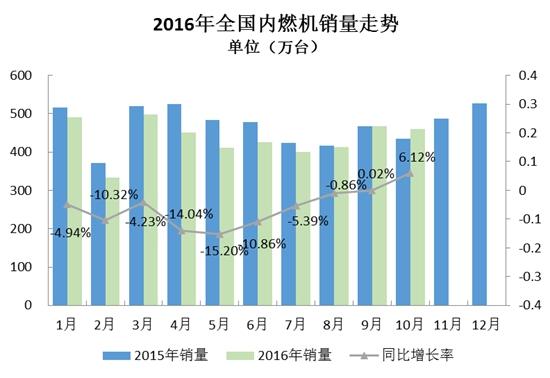

根据中国内燃机工业协会《中国内燃机工业销售月报》重点企业数据显示，数量方面，2016年10月完成内燃机销量460.47万台，环比下降1.32%，同比增长6.12%，累计完成4352.55万台，同比累计下降6.44%；功率方面，2016年10月完成22027.08万千瓦，环比增长2.29%，同比增长20.87%，累计完成功率192257.65万千瓦，同比累计增长12.10%；本月销量较9月有小幅下降，乘用车用、发电用有小幅上涨，商用车、工程、园林及摩托车用内燃机不同程度下降；同比方面船用、园林机械及摩托车用降幅较大；累计销量同比降幅至6.44%；柴油机销量持续低位徘徊，汽油机总体小幅下降。

分燃料类型来看，10月，柴油机销售38.71万台，环比下降2.65%，同比增长7.62%，累计销售400.90万台，同比累计下降27.77%；汽油机销售421.74万台，环比下降1.19%，同比增长5.99%，累计销售3951.50万台，同比累计下降3.54%。
分配套市场来看，截止至10月，乘用车用、商用车用、工程用内燃机累计销量良好，其他细分市场均出现不同程度降幅。乘用车用内燃机累计销售1682.27万台，同比累计增长14.12%；商用车用内燃机累计销售282.99万台，同比累计增长13.33%；工程机械用内燃机累计销售38.62万台，同比累计增长2.71%；农用机械用内燃机累计销售282.96万台，同比累计下降38.31%；船用内燃机累计销售2.01万台，同比累计下降47.656%；发电机组用内燃机累计销售139.78万台，同比累计下降8.56%；园林机械用内燃机累计销售269.72万台，同比累计下降7.11%；摩托车用内燃机累计销售1620.37万台，同比下降16.86%。
内燃机销量环比下降1.32%，累计销量同比降幅6.44%
受柴油机排放标准由“国二”升“国三”的影响，部分企业在国3公告未申请下来的情况下，除出口产品外，其他国二产品几乎处于停滞状态。对原国二产品占比较高的单缸柴油机行业而言，销量持续走低。10月，单缸柴油机累计销售102.65万台，同比累计下降58.63%。排名靠前的五家企业为：常柴、江苏农华（原江动）、三环、常林农装、莱动，其单柴类产品销量占行业销量比例77.86%。整体来看，行业企业正积极国三产品升级，以应对新形势下的市场需求。
在多种政策及市场需求等多方影响下，多缸柴油机累计销量降幅逐渐减少，但农用降幅仍较大。10月，多缸柴油机企业共销售298.25万台，同比累计下降2.82%。玉柴、潍柴、全柴、锡柴、云内等销量前十名的销量占总销量的70.07%。销量靠前的企业中，潍柴、锡柴、云内、江铃、福田康明斯累计销量同比增长。在多缸柴油机众多配套领域中，商用车占比最大达到64.02%，10月累计销售190.93万台，同比累计增长11.59%。其中玉柴、潍柴、云内、江铃、锡柴销量靠前。在各多缸企业纷纷争夺的客车市场中，玉柴始终保持领先地位。多缸柴油机配套的其他领域中，农用受国2升国3影响最大，销量同比降幅达到41.54%。
11月8日上午，海关总署公布数据显示，10月份，我国进出口总值2.05万亿元，下降0.6%。其中，出口1.19万亿元，下降3.2%；进口8606亿元，增长3.2%；贸易顺差3252.5亿元，收窄16.8%。出口在经历了连续6个月增长后，在上个月出现了5.6%的下滑，紧接着10月又出现了3.2%的下滑。外贸形势不佳。10月，小汽油机企业累计销售661.96万台，同比累计下降5.47%，销量前五名企业为华盛、隆鑫、润通、中坚科技、林海。其主要配套领域中，园林机械用累计销售269.72万台，同比累计下降7.11%；农机用累计销售140.56万台，同比累计下降1.16%。
多缸汽油机10月销量较9月有小幅增长，远超行业平均水平。多缸汽油机累计销售1761.58万台，同比累计增长14.32%。最主要配套在乘用车领域，占比达到94.65%。10月累计销售1667.29万台，同比累计增长14.19%。值得关注的是，排名靠前的企业同比累计多呈现较大增幅，较明显的如一汽大众15.32%、上海大众动力总成27.66%，东风日产12.63%、长城汽车24.33%、北京现代22.32%、沈阳三菱44.20%。重庆长安、神龙汽车、上海通用东岳累计降幅较大。一汽-大众、上汽通用五菱、上海大众动力总成、东风日产、长城等十家排在前列，其总体销量占行业销量半壁江山，达到了51.06%。
新能源内燃机总体呈现平稳趋势，随着环保标准的不断上升级，政府方面对新能源车的利好政策不断、新能源相关的基础设施建设全面展开，以及民众环保意识的加强及对新能源接受程度加深，新能源内燃机在2016年越来越好。
2016年10月，工程机械用、园林用、摩托车用销量降幅明显；累计销量除乘用车用、商用车用、工程机械用同比增长外，其余行业均有不同程度下降；同比累计销售降幅有所收窄。